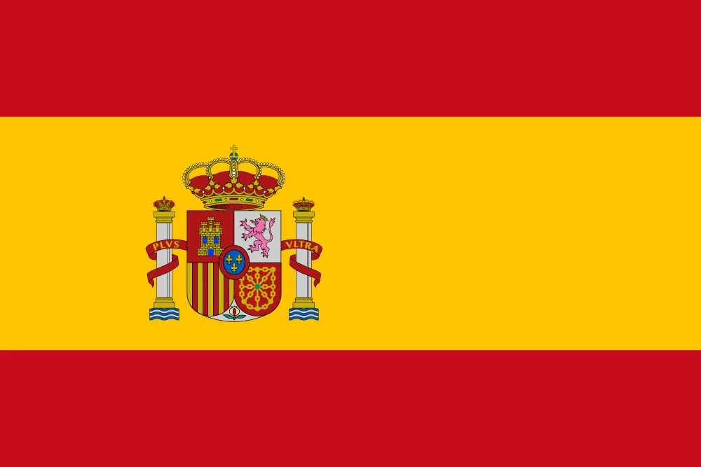

1. Iniesta’s Extra-Time Dagger
July 11, 2010, Soccer City Johannesburg—84,490 fans buzz with vuvuzelas for Spain vs. Netherlands, final, 0-0, 116th minute. Extra time drags—Arjen Robben misses two sitters, Iker Casillas saves. Then Cesc Fàbregas finds Andrés Iniesta on the right—Iniesta, 26, controls, volleys past Maarten Stekelenburg’s dive—1-0. Spain erupt—red and yellow waves crash; Iniesta rips off his shirt, revealing “Dani Jarque, siempre con nosotros” (always with us).
The stadium shakes—Spain’s first World Cup, Netherlands’ third final loss. “For Dani,” Iniesta sobs, honoring his late friend; coach Vicente del Bosque beams, “Pure class.” Clips flood screens—ball’s flight, net’s ripple—tiki-taka’s peak. “He broke us,”荷兰’s Robin van Persie mutters; Casillas lifts the trophy, tears flowing. “We waited 80 years,” Xavi says—Spain’s 708 passes that night bury the Dutch.
It’s not just a goal—it’s history. Spain’s first title—Euro 2008, now this—cements a golden era. “Iniesta’s immortal,” Pelé tweets; Netherlands’ Bert van Marwijk nods, “They deserved it.” Fans rewatch—each touch a symphony—2010’s climax, a dagger that echoes. From 0-0 to ecstasy, Spain’s reign begins in Johannesburg’s night.
2. Suárez’s Handball Save
July 2, 2010, Ellis Park Johannesburg—62,567 fans for Uruguay vs. Ghana, quarter-final, 1-1, 120th minute. Extra time ends—Sulley Muntari’s screamer, Diego Forlán’s free-kick. Then Dominic Adiyiah heads John Mensah’s flick—goal-bound. Luis Suárez, 23, on the line, slaps it away—red card. Asamoah Gyan’s penalty hits the bar—shootout, Uruguay win 4-2, John Pantsil’s miss seals it.
Ghana’s fans wail—Africa’s semi-final dream dies; Suárez sprints off, grinning. “I’d do it again,” he says; Gyan sobs, “He stole it.” Clips explode—hand, bar, Suárez’s glee—X rages, “Cheat!” “It’s instinct,” coach Óscar Tabárez defends; Ghana’s Stephen Appiah fumes, “Disgrace.” Uruguay reach semis—lose to Netherlands—but this is 2010’s gut punch, Africa’s heartbreak.
It’s not skill—it’s sacrifice. Suárez’s hand denies Ghana history—first African semi-finalist slips away. “He’s a hero,” Forlán says; Appiah counters, “A villain.” Fans rewatch—each frame a wound—2010’s most divisive moment. From 1-1 to despair, Suárez’s arm shapes Uruguay’s run—Ghana’s golden chance lost forever.

3. Tshabalala’s Opening Screamer
June 11, 2010, Soccer City—84,490 fans, South Africa vs. Mexico, tournament opener. 55th minute—Kagisho Dikgacoi wins it midfield, feeds Siphiwe Tshabalala on the left. Tshabalala, 25, cuts in, rockets a left-footed screamer—top corner past Óscar Pérez—1-0. Vuvuzelas blast—stadium erupts; Tshabalala dances with teammates, arms wide. “A dream,” he grins; Mexico’s Rafael Márquez nods, “Unstoppable.”
Clips flood screens—ball’s flight, net’s ripple—Africa’s first World Cup roars to life. “For the continent,” coach Carlos Alberto Parreira beams; Mexico equalize—1-1—but this shines. “He lit it up,” Nelson Mandela tweets via family; fans rewatch—each replay a celebration—Bafana Bafana’s pride. “We felt invincible,” Tshabalala says; 84,490 voices agree—2010’s iconic start.
It’s not a win—it’s a moment. South Africa’s only group-stage goal—draw vs. Mexico, France—but this screams hope. “He gave us everything,” Parreira says; Márquez admits, “That hurt.” First African-hosted World Cup—FIFA’s 54th-ranked host—kicks off with fire. Tshabalala’s screamer echoes—2010’s opening note, pure joy.

4. Puyol’s Header Ends Germany
July 7, 2010, Moses Mabhida Stadium Durban—60,960 fans for Spain vs. Germany, semi-final, 0-0, 73rd minute. Germany press—Miroslav Klose, Lukas Podolski denied by Casillas. Then Xavi swings a corner—Carles Puyol, 32, leaps over Sami Khedira, thumps a header past Manuel Neuer—1-0. Spain hold—Germany’s third-place streak ends; Puyol roars, fists clenched.
The stadium erupts—Spain’s red tide surges; Puyol’s wild hair bounces. “For the final,” he growls; Del Bosque beams, “He’s our rock.” Clips flood X—header’s power, Neuer’s dive—Germany’s dream dies. “He killed us,” Joachim Löw laments; Xavi says, “Perfect timing.” Spain march to Soccer City—Germany settle for bronze, 1-0 vs. Uruguay.
It’s not flair—it’s grit. Spain’s tiki-taka—65% possession—meets Puyol’s warrior heart. “He’s a lion,” Casillas says; Klose nods, “We couldn’t stop him.” Fans rewatch—each frame a battle—2010’s semi-final turns on one leap. From 0-0 to glory, Puyol’s header paves Spain’s first title—Germany’s run halted in Durban’s night.
